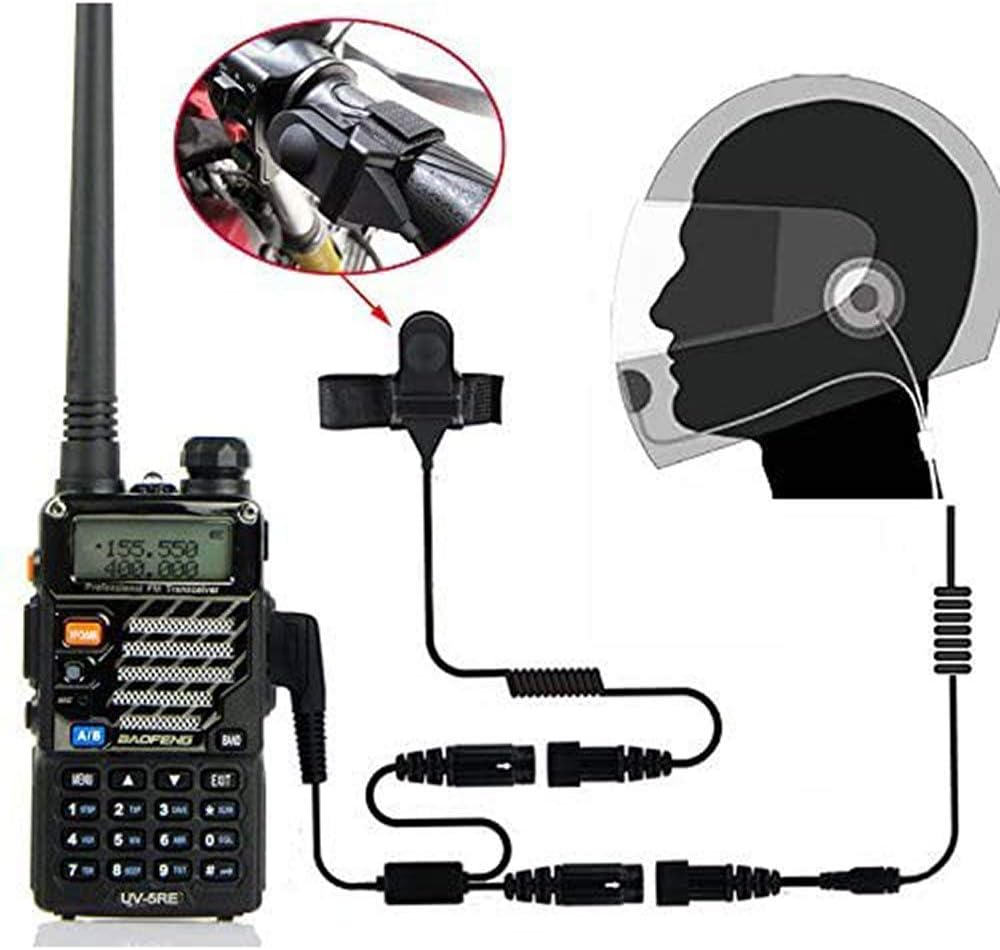
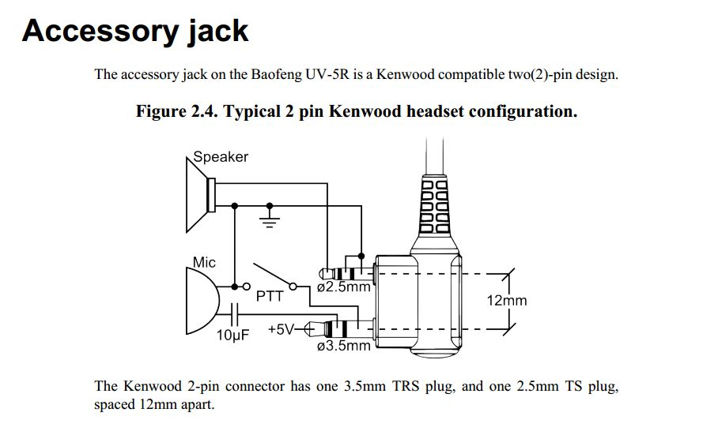
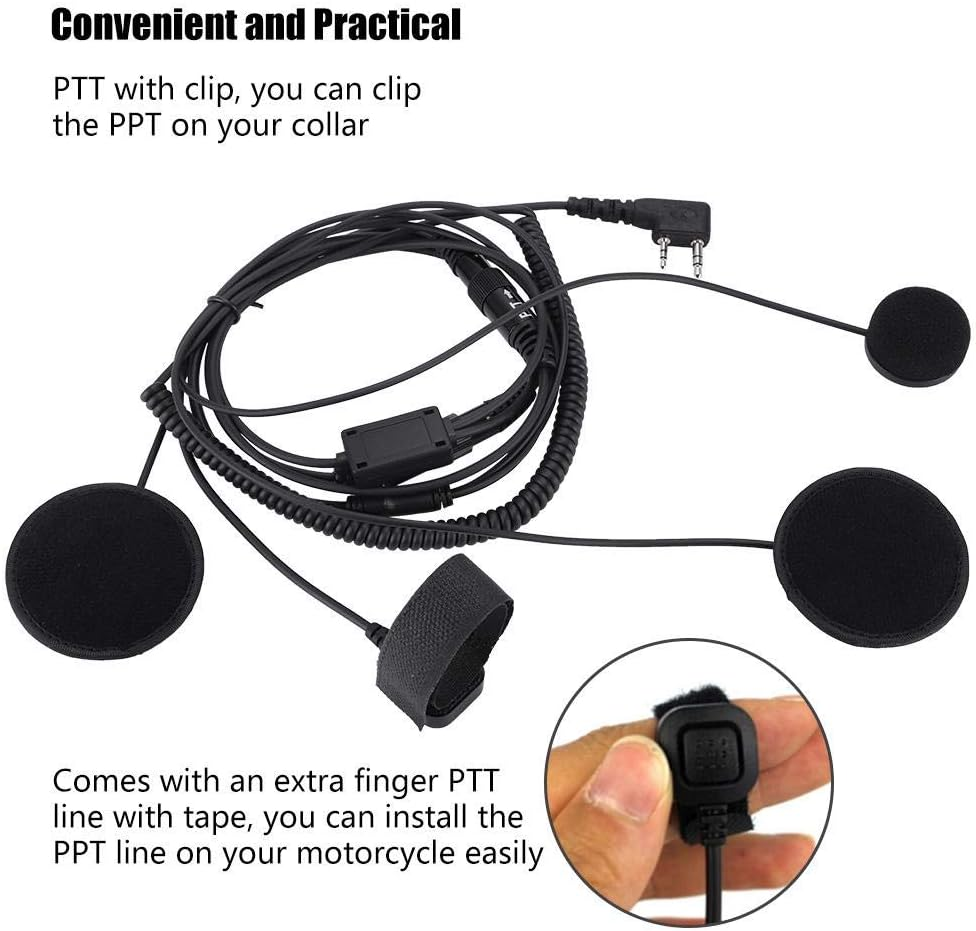
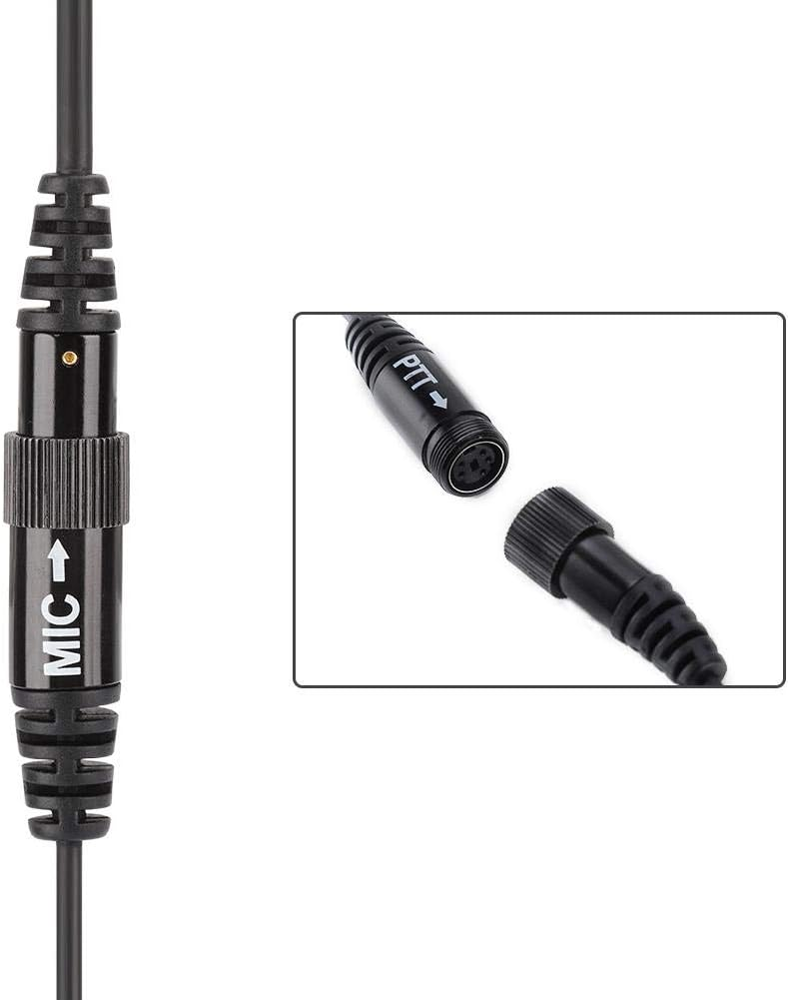
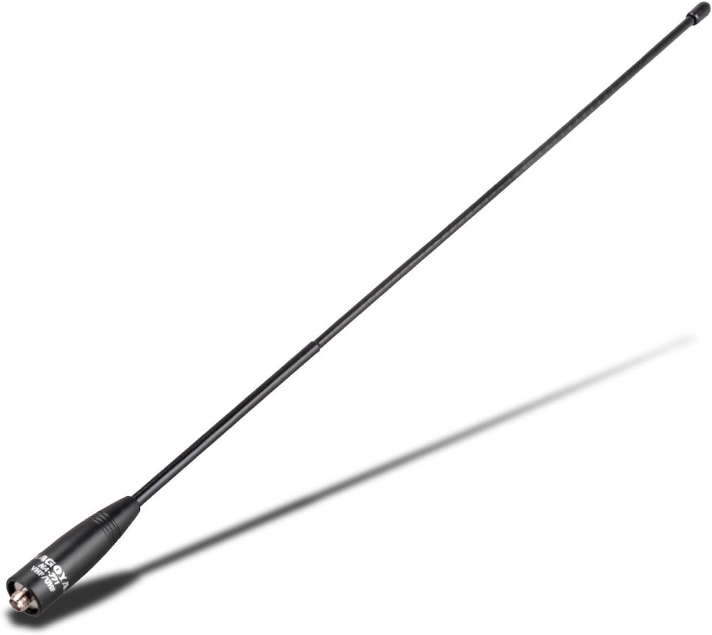
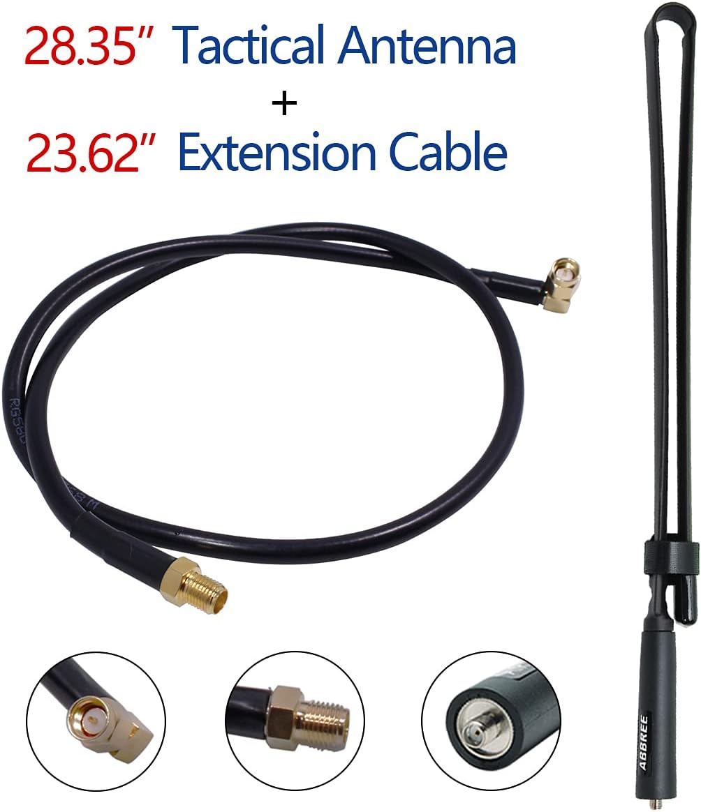
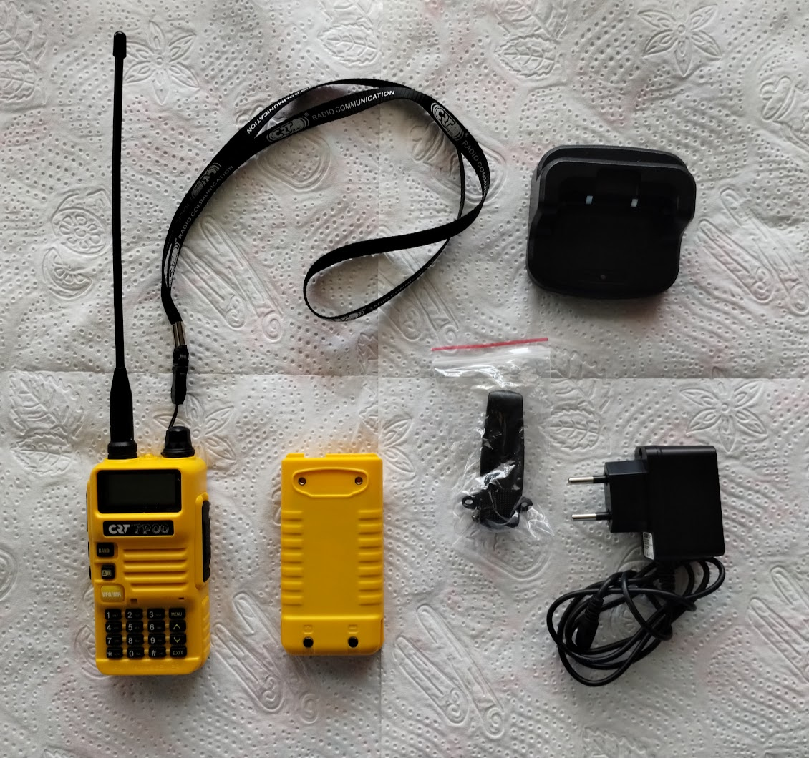
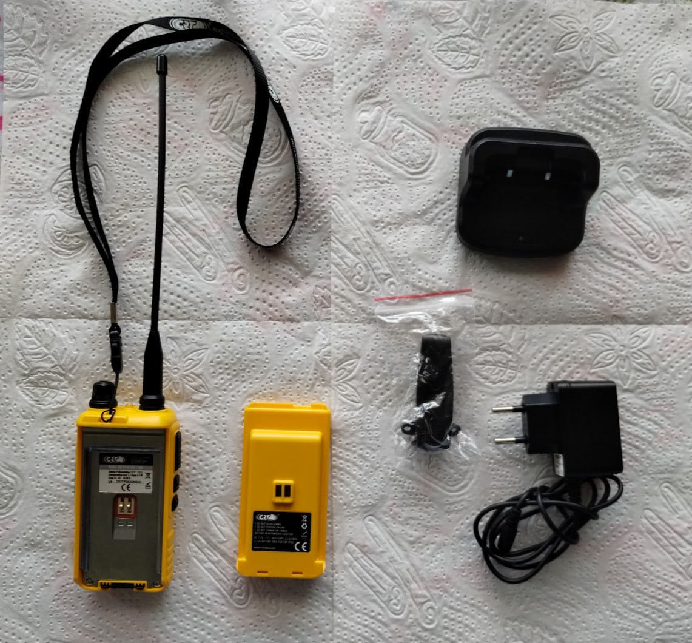
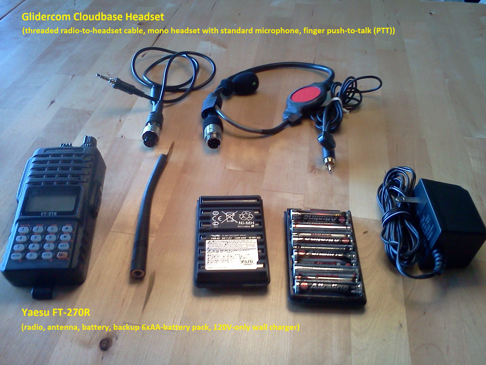

8 Ham Radio
8.1 Baofeng UV-5R
I use a Baofeng UV-5R since several years back. The reason for this is that they are easy to get in the US, the cost is only 40-50 USD, so it’s not a biggie to get a replacement, keep a backup, and buy spare batteries. The Baofeng UV-5R handset uses the a Kenwood compatible two-pin plug; one plug is 2.5mm and the other is 3.5mm and are 12mm apart. Because of this, I have a fair bit of head sets with push-to-talk (PTT) buttons to choose from. I place the PTT button on my left riser near my break handle, because that way I can easily transmit also in active air and while thermalling. I have the headset and the mic mounted permanently on my helmet.
On launch, I put on my helmet, let the cable hang down before I close my jacket, then I connect it together with the PTT cable that I run down the riser thought the carabiner, and at the end I plug it to the radio that is on my flight deck. I then turn on the radio to confirm that I can hear “Frequency mode” or “Channel mode” that the radio says when turned on. After this, I do a formal radio check.
 
Comment: According to Wikipedia, “the model variant Boafeng UV5R HT” is no longer sold in Germany and Switzerland and may not be used there.
Our radio units:
2 UV-5R MK4 with ‘MIRKIT’ on the front. Label on the back: Model: UV-5R MK4 Mirkit Edition, Voltage: 7.4V, Power: 8W, Frequency: 136-174 MHz/400-520 MHz, S/N: UV-5R MK4 A00163, S/N: UV-5R MK4 A00163. Purchased 2019-03-30 and 2019-06-14.
4 UV-5R MK4 with ‘UV-5R MK4’ on the front. Label on the back: Model: UV-5R MK4 Max Power Mirkit Edition, Voltage: 7.4V, Power: 8W, Frequency: 136-174 MHz/400-520 MHz, S/N: UV-5R MK4 A21895. FCCID: 2AJGM-UV5R. Purchased 2021-12-20.
Batteries:
- Model: BL-5. Li-ion battery 7.4V 1800mAh.
8.1.1 PTT Headset
The PTT headset I use is 15-20 USD on Amazon.
 
It has two flat ear pieces with speakers and a microphone on a three-way splitted cable with a male threaded ~13mm 5-pin circular connector1 at the end. You mount the ear pieces inside your helmet and let the cable, which reaches your chest, hang down. The Push-to-Talk (PTT) button sits on another cable that also terminates with a male 5-pin connector. The third part of this kit is a Y-split connector where one end is a standard male 2-pin type K headset connector that plugs into the radio, and the other two ends are female 5-pin connectors that connects to your headset and PTT, respectively.
8.1.2 Alternative antennas
The Baofeng UV-5R handset uses a SMA (SubMiniature version A) connector for the antenna. The handset has a male connector (inside threads) and the antenna a female connector (outside threads).
 
In addition to the antenna that comes with the radio, I have a Nagoya NA-771 40cm Whip VHF/UHF (144/430Mhz) Antenna (SMA-Female) (~20 USD on Amazon) (left), which I never really used, because I mount my radio on my flight deck and then this long antenna sticks too far out.
I’ve recently started to experiment with a 72cm foldable tactical antenna with a coax extension cord ((~17 USD on Amazon](https://www.amazon.com/dp/B094R6GW8Y/)) (right). I place the antenna upside-down in my harness and pull the extension cord over my sholder and down to the radio unit. This adds an extra step of having to screw on the antenna before each launch. To avoid that, I keep it connected and let the radio hang from it while I connect my harness and put on the flightdeck. I use a 100cm extension cord (~11 USD on Amazon) in order to reach over my shoulder and down inside of my jacket to my flight deck.
Another alternative that I’ve considered would be a wire antenna, which is basically a wire (e.g. H07V-K 4) on an female SMA connector. See https://ham.stackexchange.com/questions/140/good-wire-for-wire-antenna#181 for how to build one.
8.2 CRT France FP 00 (temporary)
I got a CRT France FP 00 radio in France 2023 when I was on the Saint Hilare launch realizing my the battery in my Baofeng radio was dead. I got it for 47 EUR from the Prevol shop at launch. I was lucky because it had the same headset connection as my Baofeng, so it worked with my PTT headset. It a Baofeng clone with the same configuration and menu items2. The battery and the charger, including the plug to the charging dock is different though. I haven’t tried, but it also looks like CHIRP (programming via cable) is not support (yet), e.g. https://chirp.danplanet.com/issues/9894.
 
8.3 Yaesu FT-270R (legacy)
In the past, I used my Yaesu FT-270R radio with a custom-build push-to-talk (PTT) headset. It worked great, but once in a while, and always during flying trips, the headset connection to the radio broke. The problem with the Yaseu FT-270R is that it has a screw-in plug (see picture). The purpose of that is so that the plug does not fall out, but the problem was that slowly you end up twisting the cable too much so that the cables inside break. It happened twice to me at launch during flying trips. I loved the custom-made Glidecom Cloudbase Headset, but it was custom built by a guy in Oregon and delivery was flaky at best, so this solution became unreliable in the long run. I never managed to find another nicec headset, so I switched to a cheaper, lower-quality Baofeng radio.

It still unknown exactly what standard the 5-pin connectors are, if a standard at all. As far as I know, it is not a 5-pin DIN connector, because they have symmetrically located pins, whereas this headset has three pins on one side and two on the other (as if it missed the upper pin). It also has a thin rectangular guiding pin/hole in the center.↩︎
I walked through the menu on the CRT-FP00 and the Baofeng UV-5R step by step and the menu entries were identical.↩︎